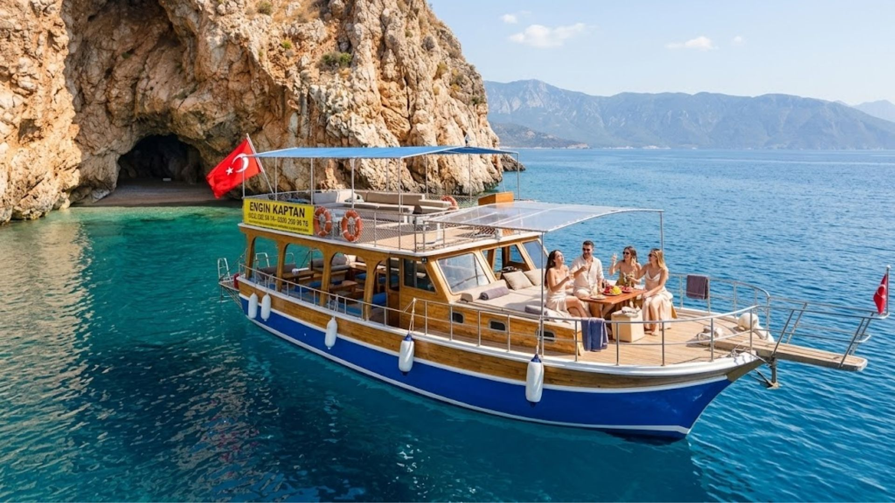

Yalnızca sizin grubunuz
Tanımadığınız kişilerle aynı kamara yok. Çocuk, müzik, sessizlik — tempo sizin.
Paylaşımlı Suluada turunda yabancıyla aynı güverte. Özel turda tekne size kalır. Suluada’da daha uzun kalın, Ceneviz’de fotoğraf, çocuk uyuyorsa tempo yavaş — kaptan uyum sağlar.
Günlük Suluada turu paylaşımlıdır; saat ve durak bellidir. Özel turda tekne yalnızca sizin için kalkar.
Tanımadığınız kişilerle aynı kamara yok. Çocuk, müzik, sessizlik — tempo sizin.
Suluada, Korsan Koyu, Ceneviz, Akseki, Sazak. İstediğiniz yerde daha uzun kalın. Hava bozarsa kaptan alternatif söyler.
Sabah erken veya öğleden sonra. Sunset ile birleştirmek isterseniz ayrı konuşulur; ışık bir kere batar.
Hepsini bir günde sıkıştırmak zorunda değilsiniz. Bir koyda saatlerce kalmak da özel turdur.
Hava ve deniz durakları değiştirebilir. Rezervasyonda kaptan o günün gerçeğini söyler.

Tarih, kişi sayısı (yetişkin / çocuk), gitmek istediğiniz koy. “Özel tur” yazmanız yeter.
Süre, tempo, özel istek. Sunset veya balık avı ayrı mesaj olsun; karışmasın.
Adrasan iskelesi, konuşulan saat. Gerisi kaptanda.
Paylaşımlı tur sabit saat ve durak, yemek dahil. Özel turda tekne size aittir; yemek dahil değildir, rota esnektir.
Evet, çoğu özel tur Suluada ister. Orada kalış sizin. Hava uygun değilse kaptan koy değiştirir.
Özel tur yüzme turudur. Olta için balık avı sayfasına bakın.
Tarih, süre, kişi. WhatsApp’tan yazın; ezbere rakam yok.
Seyirde telefon çekmeyebilir. Karadayken yazın. Mesaja “özel tur” ekleyin.